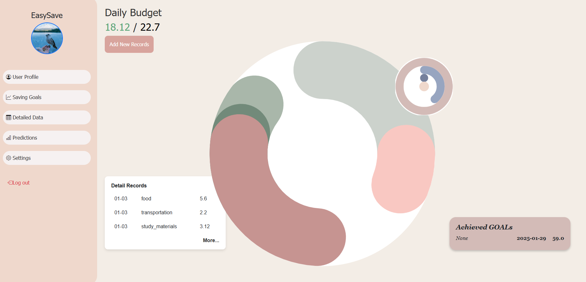
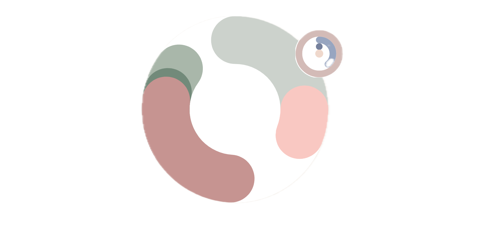
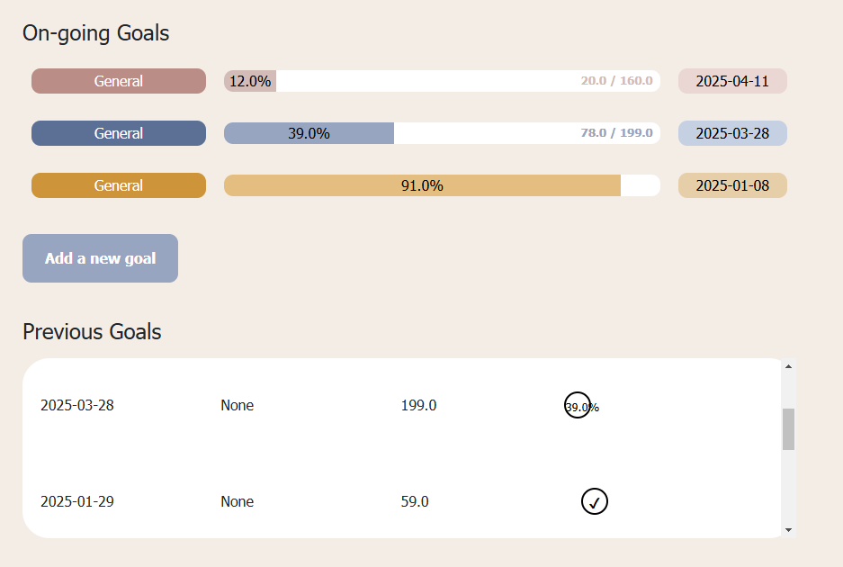
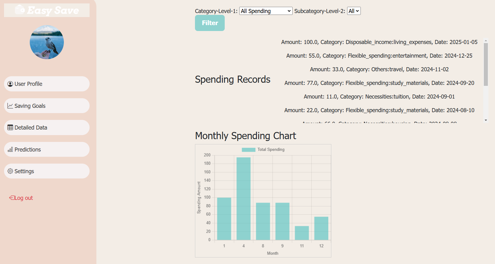
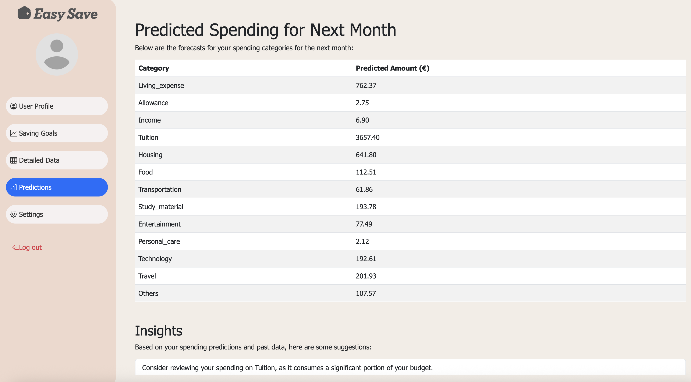
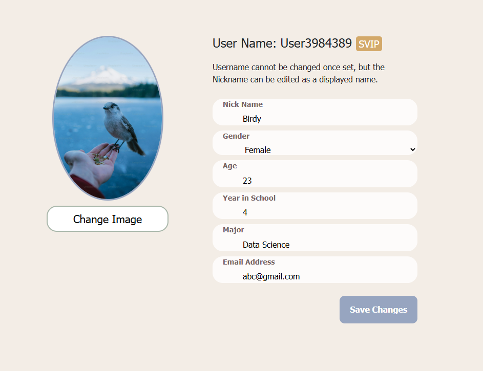

AI-Powered Student Financial Planner
- Personalized Savings
- Daily Budgets
- Live Updates
- Goal Tracking
Personalized Savings Plans & Daily Budget Generator
EasySave analyzes your income and past spending to craft a custom savings roadmap. Rather than one‑size‑fits‑all advice, you get recommendations that adapt to exactly how and when you spend. Every morning, you’ll see a precise ‘spend‑up‑to’ amount for the day, calculated from your goals and historic habits. Think of it as your pocket‑sized spending coach.

Interactive Dashboard
Every time you log an expense, your dashboard updates instantly. Charts, progress bars and peer-comparison markers all reflect your changes in real time, so you always have a clear picture of where you stand. It’s like having a financial companion that reacts the moment you take action.

Goal Tracking & Visual Progress
You can set weekly or monthly savings targets and see your progress come to life with simple, visual trackers. Whether it’s a progress ring or a milestone bar, EasySave turns numbers into something you can understand and follow. Reaching your goals becomes less about guessing and more about taking clear steps forward.

Spending Analysis
Explore your spending habits in detail with clear, easy-to-read graphs. You can filter by category or time period to uncover patterns and find areas where you might be overspending. This makes it much easier to make small, mindful changes that add up over time.

AI-Powered Predictions
EasySave uses an ARIMA-based forecasting model to give you a clear preview of next month’s spending. This advanced statistical approach looks at your past habits to predict future trends, highlighting categories where you might overshoot your goals. By seeing potential problem areas early, you can adjust today and avoid surprises later.

Profile & Settings
Manage all your personal details in one place, from your profile information to your app preferences. You can switch between themes, choose your preferred language and adjust notifications so EasySave works exactly how you want it to.
